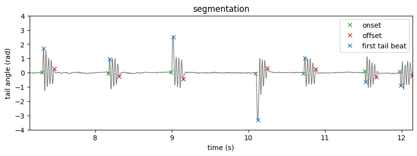
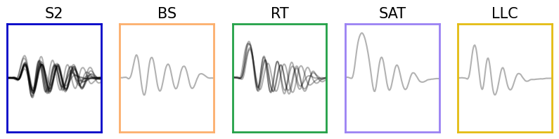

import numpy as np
import matplotlib.pyplot as plt
import matplotlib.gridspec as gridspec
from cycler import cycler
from megabouts.tracking_data import TrackingConfig, FullTrackingData, load_example_data
from megabouts.pipeline import FullTrackingPipeline
from megabouts.utils import (
bouts_category_name,
bouts_category_name_short,
bouts_category_color,
cmp_bouts,
)
df_recording, fps, mm_per_unit = load_example_data("fulltracking_posture")
tracking_cfg = TrackingConfig(fps=fps, tracking="full_tracking")
head_x = df_recording["head_x"].values * mm_per_unit
head_y = df_recording["head_y"].values * mm_per_unit
head_yaw = df_recording["head_angle"].values
tail_angle = df_recording.filter(like="tail_angle").values
tracking_data = FullTrackingData.from_posture(
head_x=head_x, head_y=head_y, head_yaw=head_yaw, tail_angle=tail_angle
)
pipeline = FullTrackingPipeline(tracking_cfg, exclude_CS=True)
ethogram, bouts, segments, tail, traj = pipeline.run(tracking_data)
/opt/hostedtoolcache/Python/3.10.15/x64/lib/python3.10/site-packages/megabouts/classification/classification.py:111: FutureWarning: You are using `torch.load` with `weights_only=False` (the current default value), which uses the default pickle module implicitly. It is possible to construct malicious pickle data which will execute arbitrary code during unpickling (See https://github.com/pytorch/pytorch/blob/main/SECURITY.md#untrusted-models for more details). In a future release, the default value for `weights_only` will be flipped to `True`. This limits the functions that could be executed during unpickling. Arbitrary objects will no longer be allowed to be loaded via this mode unless they are explicitly allowlisted by the user via `torch.serialization.add_safe_globals`. We recommend you start setting `weights_only=True` for any use case where you don't have full control of the loaded file. Please open an issue on GitHub for any issues related to this experimental feature.
torch.load(transformer_weights_path, map_location=torch.device(self.device))
---------------------------------------------------------------------------
KeyboardInterrupt Traceback (most recent call last)
Cell In[4], line 1
----> 1 ethogram, bouts, segments, tail, traj = pipeline.run(tracking_data)
File /opt/hostedtoolcache/Python/3.10.15/x64/lib/python3.10/site-packages/megabouts/pipeline/freely_swimming_pipeline.py:261, in FullTrackingPipeline.run(self, tracking_data)
256 raise ValueError(
257 "segmentation_cfg should be an instance of TailSegmentationConfig or TrajSegmentationConfig"
258 )
260 # self.logger.info("Classification...")
--> 261 bouts = self.classify_bouts(tail, traj, segments)
263 ethogram = EthogramFullTracking(segments, bouts, tail, traj)
265 return ethogram, bouts, segments, tail, traj
File /opt/hostedtoolcache/Python/3.10.15/x64/lib/python3.10/site-packages/megabouts/pipeline/freely_swimming_pipeline.py:220, in FullTrackingPipeline.classify_bouts(self, tail, traj, segments)
213 traj_array = segments.extract_traj_array(
214 head_x=traj.x_smooth, head_y=traj.y_smooth, head_angle=traj.yaw_smooth
215 )
217 classifier = BoutClassifier(
218 self.tracking_cfg, self.segmentation_cfg, exclude_CS=self.exclude_CS
219 )
--> 220 classif_results = classifier.run_classification(
221 tail_array=tail_array, traj_array=traj_array
222 )
223 segments.set_HB1(classif_results["first_half_beat"])
225 tail_array = segments.extract_tail_array(
226 tail_angle=tail.angle_smooth, align_to_onset=False
227 )
File /opt/hostedtoolcache/Python/3.10.15/x64/lib/python3.10/site-packages/megabouts/classification/classification.py:173, in BoutClassifier.run_classification(self, **kwargs)
171 for inputs in data_loader:
172 feature, t, mask = inputs
--> 173 results.append(self.net(feature, t, mask))
175 classif_results = self.process_results(results, len(data))
176 return classif_results
File /opt/hostedtoolcache/Python/3.10.15/x64/lib/python3.10/site-packages/torch/nn/modules/module.py:1736, in Module._wrapped_call_impl(self, *args, **kwargs)
1734 return self._compiled_call_impl(*args, **kwargs) # type: ignore[misc]
1735 else:
-> 1736 return self._call_impl(*args, **kwargs)
File /opt/hostedtoolcache/Python/3.10.15/x64/lib/python3.10/site-packages/torch/nn/modules/module.py:1747, in Module._call_impl(self, *args, **kwargs)
1742 # If we don't have any hooks, we want to skip the rest of the logic in
1743 # this function, and just call forward.
1744 if not (self._backward_hooks or self._backward_pre_hooks or self._forward_hooks or self._forward_pre_hooks
1745 or _global_backward_pre_hooks or _global_backward_hooks
1746 or _global_forward_hooks or _global_forward_pre_hooks):
-> 1747 return forward_call(*args, **kwargs)
1749 result = None
1750 called_always_called_hooks = set()
File /opt/hostedtoolcache/Python/3.10.15/x64/lib/python3.10/site-packages/megabouts/classification/transformer_network.py:103, in TransAm.forward(self, input, t, mask)
93 output = torch.cat(
94 [self.cls_token.expand(output.shape[0], -1, -1), output], dim=1
95 )
96 mask = torch.cat(
97 [
98 torch.zeros((output.shape[0], 1), dtype=torch.bool, device=mask.device),
(...)
101 dim=1,
102 )
--> 103 output = self.transformer_encoder(
104 output, src_key_padding_mask=mask
105 ) # ,self.src_mask)
106 output_CLS = output[:, 0, :]
107 output_bout_cat = self.dense_bout_cat(output_CLS)
File /opt/hostedtoolcache/Python/3.10.15/x64/lib/python3.10/site-packages/torch/nn/modules/module.py:1736, in Module._wrapped_call_impl(self, *args, **kwargs)
1734 return self._compiled_call_impl(*args, **kwargs) # type: ignore[misc]
1735 else:
-> 1736 return self._call_impl(*args, **kwargs)
File /opt/hostedtoolcache/Python/3.10.15/x64/lib/python3.10/site-packages/torch/nn/modules/module.py:1747, in Module._call_impl(self, *args, **kwargs)
1742 # If we don't have any hooks, we want to skip the rest of the logic in
1743 # this function, and just call forward.
1744 if not (self._backward_hooks or self._backward_pre_hooks or self._forward_hooks or self._forward_pre_hooks
1745 or _global_backward_pre_hooks or _global_backward_hooks
1746 or _global_forward_hooks or _global_forward_pre_hooks):
-> 1747 return forward_call(*args, **kwargs)
1749 result = None
1750 called_always_called_hooks = set()
File /opt/hostedtoolcache/Python/3.10.15/x64/lib/python3.10/site-packages/torch/nn/modules/transformer.py:511, in TransformerEncoder.forward(self, src, mask, src_key_padding_mask, is_causal)
508 is_causal = _detect_is_causal_mask(mask, is_causal, seq_len)
510 for mod in self.layers:
--> 511 output = mod(
512 output,
513 src_mask=mask,
514 is_causal=is_causal,
515 src_key_padding_mask=src_key_padding_mask_for_layers,
516 )
518 if convert_to_nested:
519 output = output.to_padded_tensor(0.0, src.size())
File /opt/hostedtoolcache/Python/3.10.15/x64/lib/python3.10/site-packages/torch/nn/modules/module.py:1736, in Module._wrapped_call_impl(self, *args, **kwargs)
1734 return self._compiled_call_impl(*args, **kwargs) # type: ignore[misc]
1735 else:
-> 1736 return self._call_impl(*args, **kwargs)
File /opt/hostedtoolcache/Python/3.10.15/x64/lib/python3.10/site-packages/torch/nn/modules/module.py:1747, in Module._call_impl(self, *args, **kwargs)
1742 # If we don't have any hooks, we want to skip the rest of the logic in
1743 # this function, and just call forward.
1744 if not (self._backward_hooks or self._backward_pre_hooks or self._forward_hooks or self._forward_pre_hooks
1745 or _global_backward_pre_hooks or _global_backward_hooks
1746 or _global_forward_hooks or _global_forward_pre_hooks):
-> 1747 return forward_call(*args, **kwargs)
1749 result = None
1750 called_always_called_hooks = set()
File /opt/hostedtoolcache/Python/3.10.15/x64/lib/python3.10/site-packages/torch/nn/modules/transformer.py:904, in TransformerEncoderLayer.forward(self, src, src_mask, src_key_padding_mask, is_causal)
900 x = x + self._ff_block(self.norm2(x))
901 else:
902 x = self.norm1(
903 x
--> 904 + self._sa_block(x, src_mask, src_key_padding_mask, is_causal=is_causal)
905 )
906 x = self.norm2(x + self._ff_block(x))
908 return x
File /opt/hostedtoolcache/Python/3.10.15/x64/lib/python3.10/site-packages/torch/nn/modules/transformer.py:918, in TransformerEncoderLayer._sa_block(self, x, attn_mask, key_padding_mask, is_causal)
911 def _sa_block(
912 self,
913 x: Tensor,
(...)
916 is_causal: bool = False,
917 ) -> Tensor:
--> 918 x = self.self_attn(
919 x,
920 x,
921 x,
922 attn_mask=attn_mask,
923 key_padding_mask=key_padding_mask,
924 need_weights=False,
925 is_causal=is_causal,
926 )[0]
927 return self.dropout1(x)
File /opt/hostedtoolcache/Python/3.10.15/x64/lib/python3.10/site-packages/torch/nn/modules/module.py:1736, in Module._wrapped_call_impl(self, *args, **kwargs)
1734 return self._compiled_call_impl(*args, **kwargs) # type: ignore[misc]
1735 else:
-> 1736 return self._call_impl(*args, **kwargs)
File /opt/hostedtoolcache/Python/3.10.15/x64/lib/python3.10/site-packages/torch/nn/modules/module.py:1747, in Module._call_impl(self, *args, **kwargs)
1742 # If we don't have any hooks, we want to skip the rest of the logic in
1743 # this function, and just call forward.
1744 if not (self._backward_hooks or self._backward_pre_hooks or self._forward_hooks or self._forward_pre_hooks
1745 or _global_backward_pre_hooks or _global_backward_hooks
1746 or _global_forward_hooks or _global_forward_pre_hooks):
-> 1747 return forward_call(*args, **kwargs)
1749 result = None
1750 called_always_called_hooks = set()
File /opt/hostedtoolcache/Python/3.10.15/x64/lib/python3.10/site-packages/torch/nn/modules/activation.py:1368, in MultiheadAttention.forward(self, query, key, value, key_padding_mask, need_weights, attn_mask, average_attn_weights, is_causal)
1342 attn_output, attn_output_weights = F.multi_head_attention_forward(
1343 query,
1344 key,
(...)
1365 is_causal=is_causal,
1366 )
1367 else:
-> 1368 attn_output, attn_output_weights = F.multi_head_attention_forward(
1369 query,
1370 key,
1371 value,
1372 self.embed_dim,
1373 self.num_heads,
1374 self.in_proj_weight,
1375 self.in_proj_bias,
1376 self.bias_k,
1377 self.bias_v,
1378 self.add_zero_attn,
1379 self.dropout,
1380 self.out_proj.weight,
1381 self.out_proj.bias,
1382 training=self.training,
1383 key_padding_mask=key_padding_mask,
1384 need_weights=need_weights,
1385 attn_mask=attn_mask,
1386 average_attn_weights=average_attn_weights,
1387 is_causal=is_causal,
1388 )
1389 if self.batch_first and is_batched:
1390 return attn_output.transpose(1, 0), attn_output_weights
File /opt/hostedtoolcache/Python/3.10.15/x64/lib/python3.10/site-packages/torch/nn/functional.py:6097, in multi_head_attention_forward(query, key, value, embed_dim_to_check, num_heads, in_proj_weight, in_proj_bias, bias_k, bias_v, add_zero_attn, dropout_p, out_proj_weight, out_proj_bias, training, key_padding_mask, need_weights, attn_mask, use_separate_proj_weight, q_proj_weight, k_proj_weight, v_proj_weight, static_k, static_v, average_attn_weights, is_causal)
6093 if not use_separate_proj_weight:
6094 assert (
6095 in_proj_weight is not None
6096 ), "use_separate_proj_weight is False but in_proj_weight is None"
-> 6097 q, k, v = _in_projection_packed(query, key, value, in_proj_weight, in_proj_bias)
6098 else:
6099 assert (
6100 q_proj_weight is not None
6101 ), "use_separate_proj_weight is True but q_proj_weight is None"
File /opt/hostedtoolcache/Python/3.10.15/x64/lib/python3.10/site-packages/torch/nn/functional.py:5501, in _in_projection_packed(q, k, v, w, b)
5498 if k is v:
5499 if q is k:
5500 # self-attention
-> 5501 proj = linear(q, w, b)
5502 # reshape to 3, E and not E, 3 is deliberate for better memory coalescing and keeping same order as chunk()
5503 proj = (
5504 proj.unflatten(-1, (3, E))
5505 .unsqueeze(0)
(...)
5508 .contiguous()
5509 )
KeyboardInterrupt:
Show code cell source
fig, ax = plt.subplots(2, 1, figsize=(15, 5), sharex=True)
x = tracking_data._tail_angle[:, 7]
ax[0].plot(x)
ax[0].plot(segments.onset, x[segments.onset], "x", color="green")
ax[0].plot(segments.offset, x[segments.offset], "x", color="red")
ax[0].plot(segments.HB1, x[segments.HB1], "x", color="blue")
ax[0].set_ylim(-4, 4)
x = tail.vigor
ax[1].plot(x)
ax[1].plot(segments.onset, x[segments.onset], "x", color="green")
ax[1].plot(segments.offset, x[segments.offset], "x", color="red")
t = np.arange(tracking_data.T) / tracking_cfg.fps
IdSt = 386502 # np.random.randint(tracking_data.T)
Duration = 10 * tracking_cfg.fps
ax[1].set_xlim(IdSt, IdSt + Duration)
fig, ax = plt.subplots(1, 1, figsize=(10, 3))
x = tail.df.angle_smooth.iloc[:, 7]
ax.plot(t, x, color="tab:grey", lw=1)
ax.plot(t[segments.onset], x[segments.onset], "x", color="tab:green", label="onset")
ax.plot(t[segments.offset], x[segments.offset], "x", color="tab:red", label="offset")
ax.plot(
t[segments.HB1], x[segments.HB1], "x", color="tab:blue", label="first tail beat"
)
ax.set(
**{
"title": "segmentation",
"xlim": (t[IdSt], t[IdSt + Duration]),
"ylim": (-4, 4),
"ylabel": "tail angle (rad)",
"xlabel": "time (s)",
}
)
ax.legend()
plt.show()

Show code cell source
id_b = np.unique(bouts.df.label.category[bouts.df.label.proba > 0.5]).astype("int")
fig, ax = plt.subplots(facecolor="white", figsize=(25, 4))
ax.spines["top"].set_visible(False)
ax.spines["right"].set_visible(False)
ax.spines["bottom"].set_visible(False)
ax.spines["left"].set_visible(False)
ax.set_xticks([])
ax.set_yticks([])
G = gridspec.GridSpec(1, len(id_b))
ax0 = {}
for i, b in enumerate(id_b):
ax0 = plt.subplot(G[i])
ax0.set_title(bouts_category_name_short[b], fontsize=15)
for i_sg, sg in enumerate([1, -1]):
id = bouts.df[
(bouts.df.label.category == b)
& (bouts.df.label.sign == sg)
& (bouts.df.label.proba > 0.5)
].index
if len(id) > 0:
ax0.plot(sg * bouts.tail[id, 7, :].T, color="k", alpha=0.3)
ax0.set_xlim(0, pipeline.segmentation_cfg.bout_duration)
ax0.set_ylim(-4, 4)
ax0.set_xticks([])
ax0.set_yticks([])
for sp in ["top", "bottom", "left", "right"]:
ax0.spines[sp].set_color(bouts_category_color[b])
ax0.spines[sp].set_linewidth(5)
plt.show()

Show code cell source
IdSt = 161011
T = 3
Duration = T * tracking_cfg.fps
IdEd = IdSt + Duration
t = np.arange(Duration) / tracking_cfg.fps
fig = plt.figure(facecolor="white", figsize=(15, 5), constrained_layout=True)
G = gridspec.GridSpec(2, 1, height_ratios=[1, 0.2], hspace=0.5)
ax = plt.subplot(G[0, 0])
blue_cycler = cycler(color=plt.cm.Blues(np.linspace(0.2, 0.9, 10)))
ax.set_prop_cycle(blue_cycler)
ax.plot(t, ethogram.df["tail_angle"].values[IdSt:IdEd, :7], lw=1)
ax.set_ylim(-4, 4)
ax.set_xlim(0, T)
ax.spines["top"].set_visible(False)
ax.spines["right"].set_visible(False)
ax.spines["bottom"].set_visible(False)
ax.get_yaxis().tick_left()
ax.get_xaxis().set_ticks([])
ax.set_ylabel("tail angle (rad)", rotation=0, labelpad=100)
ax = plt.subplot(G[1, 0])
ax.imshow(
ethogram.df[("bout", "cat")].values[IdSt:IdEd].T,
cmap=cmp_bouts,
aspect="auto",
vmin=0,
vmax=12,
interpolation="nearest",
extent=(0, T, 0, 1),
)
ax.spines["top"].set_visible(False)
ax.spines["right"].set_visible(False)
ax.spines["bottom"].set_visible(False)
ax.get_yaxis().tick_left()
ax.get_xaxis().set_ticks([])
ax.get_yaxis().set_ticks([])
ax.set_xlim(0, T)
ax.set_ylim(0, 1.1)
id_b = np.unique(ethogram.df[("bout", "id")].values[IdSt:IdEd]).astype("int")
id_b = id_b[id_b > -1]
for i in id_b:
on_ = bouts.df.iloc[i][("location", "onset")]
b = bouts.df.iloc[i][("label", "category")]
ax.text((on_ - IdSt) / tracking_cfg.fps, 1.1, bouts_category_name[int(b)])
ax.set_ylabel("bout category", rotation=0, labelpad=100)
plt.show()
C:\Users\adrien\AppData\Local\Temp\ipykernel_65564\1591975404.py:26: PerformanceWarning: indexing past lexsort depth may impact performance.
ax.imshow(ethogram.df[('bout','cat')].values[IdSt:IdEd].T,cmap=cmp_bouts,aspect='auto',vmin=0,vmax=12,interpolation='nearest',extent=(0,T,0,1))
C:\Users\adrien\AppData\Local\Temp\ipykernel_65564\1591975404.py:36: PerformanceWarning: indexing past lexsort depth may impact performance.
id_b = np.unique(ethogram.df[('bout','id')].values[IdSt:IdEd]).astype('int')